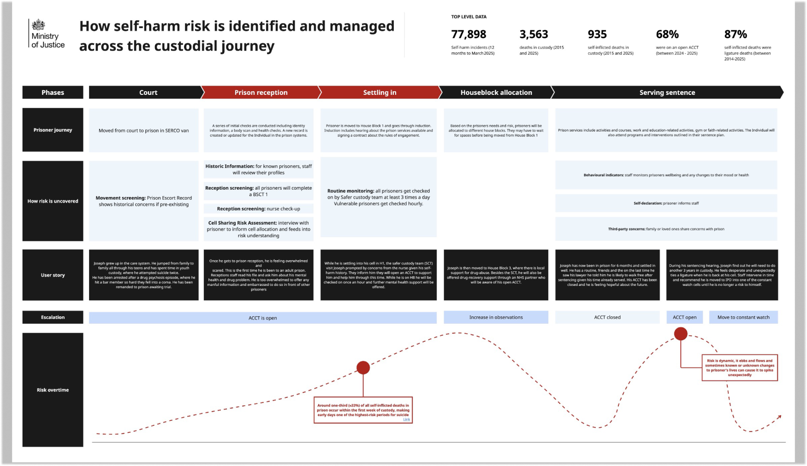
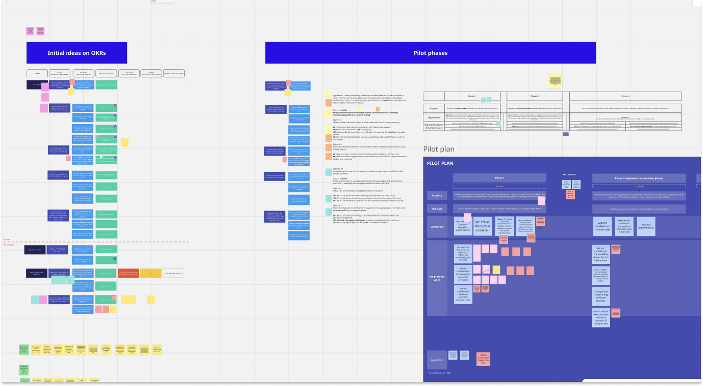
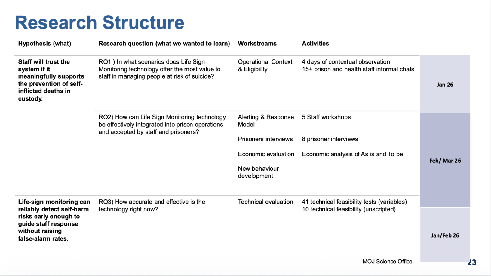

Life Signs Monitoring, Ministry of Justice
Could in-cell sensors help prevent deaths in custody?
Introducing service design to embed user-centred R&D at MoJ’s Science Office
The Life Signs Monitoring pilot explored whether in-cell sensors could help prevent self-inflicted deaths in custody. It was a ministerially sponsored piece of work in MoJ’s Science Office, the department responsible for emerging technology R&D. I joined as the Science Office’s first service designer, brought in to run the pilot and, at the same time, make the case for user-centred design in a function that had previously approached R&D as a technology assurance exercise.
- Role
- Product manager, researcher and service designer
- Client
- Ministry of Justice
- Year
- 2026
- Skills used
- Horizon scanning
- Service design
- Research
The problem
Self-harm and suicide remain some of the most complex and persistent challenges facing the Ministry of Justice. They place immense emotional and operational pressure on prison staff and signal deep distress among people in custody. Each death costs MoJ over £110,000 and has traumatic effects on staff and on the person’s family.
Alongside this operational need, there was ministerial interest in using emerging technology to offer solutions to the problem, and to showcase MoJ’s R&D capabilities.


My approach
I joined the Science Office, the MoJ department responsible for research and development of emerging technologies, as its first service designer to run this project. The team was me, the head of the Science Office’s Futures team and two subject matter experts from the HMPPS Safer Custody team.
I saw my role as delivering two things at once: setting up and delivering the first R&D project, and showing the value of service design.
The team had already selected a supplier and a technology to test. This was a pro bono piece of work, so the head of team and I spent two months working with the supplier and MoJ’s commercial, legal and data teams before the pilot could start.
It is not uncommon for emerging technology R&D to start from the solution rather than the problem. My first task was to zoom out and establish the problem area.


I started by reframing the problem from “Does this supplier’s technology work?” to “Should MoJ and HMPPS invest in 3D and radar sensors (life signs monitoring technology) for safer custody?”
This separated the technology from the supplier, and framed the project around more than technical capability.
I spent the first month doing desk research and interviewing subject matter experts and users, to understand what the right use case for this technology would be. Suicide in prisons is a big space. To understand the value of the technology, we needed to understand how and why suicide happens, and what a target solution might be.
Key findings from initial research:
- Self-harm is the most prevalent way people hurt themselves in prison. In the 12 months to December 2025 there were 72,753 reported incidents, a rate of 837 per 1,000 prisoners. However, clinical professionals and staff often see self-harm as a coping mechanism that gives people in prison a sense of control.
- 88% of self-inflicted deaths in the last 10 years were due to ligature.
- Prison officers’ ability to detect self-harm risk depends on experience, or on someone confiding in them. There is a sense that if someone really wants to end their life, they will do it regardless.
- Prison officers felt that new arrivals, the first 72 hours and especially night-time were the riskiest periods, which existing data confirmed.
- There was a general feeling of hopelessness. Prison officers feel anxious about opening cell doors knowing they might find someone unresponsive, and they carry that home with them.
- Research with prison officers and a review of documents showed that the existing process for caring for people struggling with their mental health (the ACCT process) was being used as a catch-all, and was being misused.
What I did: the pilot structure
Desirability. In what scenarios does life signs monitoring technology offer the most value to staff managing people at risk of suicide, and to prisoners?
Feasibility. How can life signs monitoring technology be effectively integrated into prison operations and accepted by staff?
Viability. How accurate and effective is the technology right now?
Ethics. Is this the right thing to do?


As part of this work, I:
- Produced a full set of success measures (OKRs) against the original pilot objectives, a benefits and risks map, and a set of call-to-market requirements for future supplier engagement. These are now the evidence base as findings go to the Delivery Board and the Strategic Board of the Safety Group, with a decision on next steps to follow.
- Translated raw technical results, such as accuracy rates, response delays and false positives, into implications for the business. This surfaced the risks and dependencies that determined how appropriate the technology is for MoJ and HMPPS.
- Developed design principles, informed by contextual research and staff interviews, for how a life signs monitoring system would have to behave to be trusted by staff, prisoners and medical staff. It would need to be distinct from existing alarms, give only the information needed so staff response isn’t slowed, work across several channels and, crucially, not be audible to the person in the cell.
- Turned research findings into clear recommendations on when, how and for whom this technology would be suitable, combining HMPPS data with what we learned from prisoners and prison staff.
- Influenced stakeholders to see the technology as a possibility rather than a given. There is a real risk of senior leaders being so keen for it to work that positive bias drives the work. Part of my role was to keep the research grounded. For example, I showed that the “not breathing” radar sensor, the feature everyone wanted most, could not yet be reliably tested at all, and that the system’s accuracy dropped sharply outside controlled conditions. Delivering findings that tempered expectations on a ministerially sponsored pilot meant being clear and evidence-led without losing the trust of sponsors who wanted a more straightforwardly positive answer.


Research synthesis activities
The outcome
- The pilot concluded that life signs monitoring technology has real potential to support safer custody, but that this supplier and technology were not yet mature enough to deploy, sitting at Technology Readiness Level 4 to 5. More importantly, the research reframed the question the organisation should be asking. Rather than “Is this technology ready to buy?”, the evidence pointed to a more useful recommendation: develop the technology with suppliers against the specific behaviours that matter most (ligature-related risk), run a wider call to market to avoid depending on a single supplier, and treat any future technology as one part of a wider system response. It is not a substitute for the human, relational work of identifying risk, which officers described as fundamentally driven by experience.
- Since this pilot, other projects in the Science Office have asked for the same approach. It was the first time they had seen a user-centred lens applied to a project, and they recognise its value alongside their scientific approach. I’m helping set up the next R&D pilot with a mid-weight service designer I line manage and a team of three scientists. Once they’re set up, I’ll step back and pass on the baton. A user-centred approach is now embedded in how the Science Office runs its pilots.
Feedback
“Joana was a real asset to the team from the moment she joined. She played an important role in helping to drive momentum across the Life Signs pilot, supporting stakeholder engagement, research activity, governance, testing, evaluation and reporting.
Jo provided valuable insight when sharing pilot findings and research outputs, and helped maintain effective communication between HMPPS, Science Office colleagues and external stakeholders. She also supported the preparation and review of presentation materials and progress updates, and was confident in raising technical and operational questions with suppliers and colleagues to help ensure the best outcomes were achieved.
Throughout the pilot lifecycle, Jo acted as a key liaison between operational colleagues, researchers and suppliers, contributing to installation, testing, evaluation, reporting and board engagement activity.
I particularly valued Jo’s ability to challenge methods and findings in a way that was open, honest and sensitive. She was an excellent asset to the team and a strong ambassador for the MoJ Science Office.”
Dave Quinell, Senior Safety Project and Procedures Lead, Safety Group, HMPPS
“A particular strength I have experienced throughout has been her excellent communication skills. Jo always maintains clear, timely, and effective communication with team members and stakeholders at all levels, ensuring that information is shared appropriately and that expectations are understood and professionally managed. Her ability to actively listen, provide clarity, and encourage the relationships we achieved, especially with the external companies involved, has contributed significantly to the successful completion of the project within the required timeframe.
She inspired confidence within the team and helped to create an environment where all colleagues felt engaged and had the support to actively contribute at every stage. She often led by example, encouraging accountability and maintaining a strong focus on project objectives while remaining responsive to the needs of the team.
Jo consistently displayed good judgement and effective decision-making skills. She was able to assess the latest information, consider any risks or potential opportunities and make well-informed decisions that supported delivery objectives. Her approach to problems arising was very initiative-taking, ensuring that potential issues were identified and addressed at an early stage, minimising potential delay.”
Simon Eldridge, Safety Projects and Procedures Lead, Safety Group, HMPPS